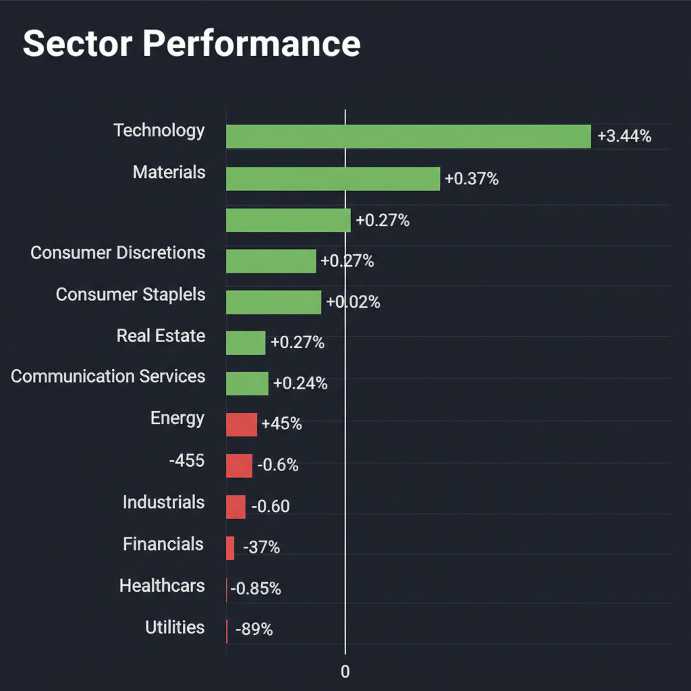
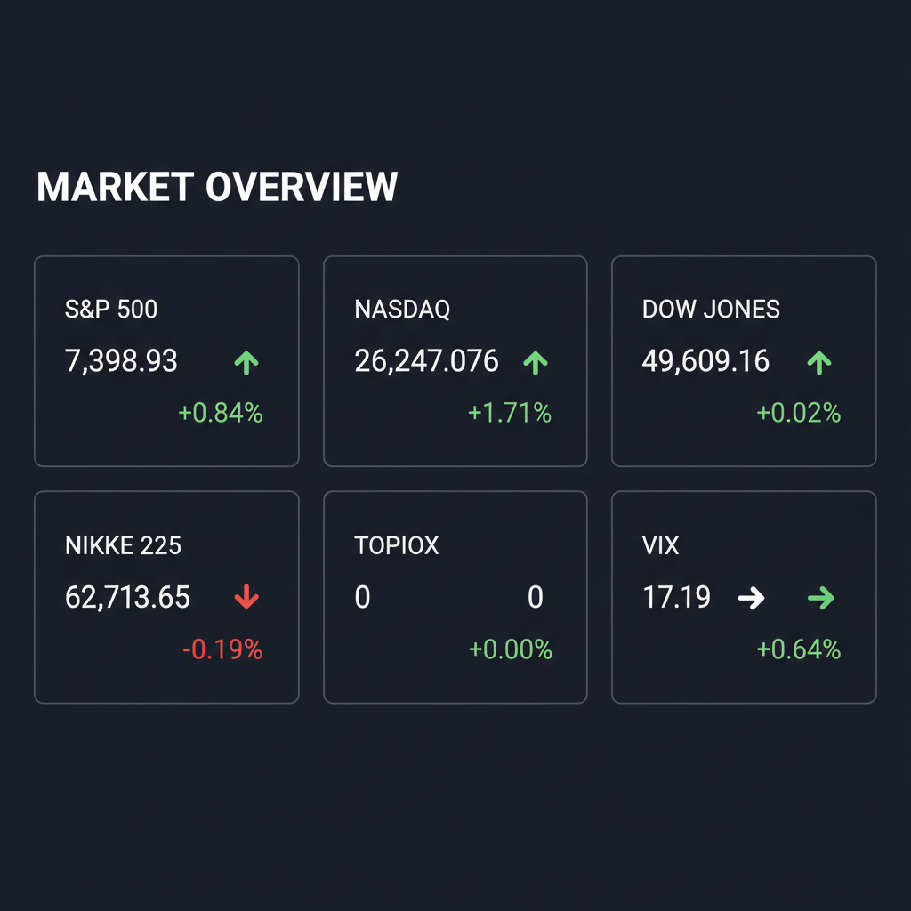

Daily Investment Report - 2026-05-10
Generated: 2026/5/10 7:23:28


投資チームミーティングの議論を踏まえ、議長として各エージェントの分析を統合し、現在の市場環境において投資家が即座にアクションを取るための最終レポートを作成いたしました。
1. エグゼクティブサマリー
- 主要指数はAIへの熱狂により連騰していますが、VIX（恐怖指数）の同時上昇や特定セクターへの極端な資金集中が示す通り、市場内部の脆弱性は極限に達しています。
- 水面下では、中東情勢の緊迫化によるサプライチェーンの分断リスクと、中国のエネルギー需要減退による実体経済の冷え込みが進行しており、スタグフレーションの足音が近づいています。
- 今は利益を追う局面に非ず、過熱した大型AI株の利益を確定し、強固なファンダメンタルズを持つ中小型のサイバーセキュリティ株や実物資産（金関連）へ資金を逃がす「防衛的ポートフォリオの構築」を急ぐべき転換点です。
2. 注目銘柄リスト
強気（買い推奨）
- HENNGE（4475.T） [時価総額：数百億円規模（中小型）]
AI音声詐欺の巧妙化という新たな社会問題により、同社の認証セキュリティ基盤の需要が爆発的に拡大しており、高成長と強固なフリーキャッシュフロー創出力を持つ稀有なテンバガー候補です。
- 三菱自動車（7211.T） [時価総額：約7,000億円規模（中大型）]
中東情勢による300億円の減益要因を軽々と吸収し、最終利益2.5倍の増益ガイダンスを発表しており、事業構造の筋肉質化と割安なバリュエーションから下値リスクが極めて限定的です。
中立（様子見）
- 助川電気工業（7711.T） [時価総額：約100億円規模（超小型）]
AIデータセンターの排熱問題や半導体向けヒーターを手掛ける熱制御のニッチトップ企業としてテンバガーの素質を秘めていますが、業績のボラティリティが高いため、ROEの持続性を確認するまでは様子見が推奨されます。
- Restaurant Brands International（QSR） [時価総額：約300億ドル規模（大型）]
傘下のバーガーキングが実施した「ワッパー」の改良による売上回復の兆しは評価できますが、現在のインフレ疲れの中で、客数増の裏付けと利益率の推移を確認する必要があります。
弱気（警戒）
- 安川電機（6506.T） [時価総額：約1.5兆円規模（大型）]
大幅減益の決算にもかかわらず「フィジカルAI」というテーマ性だけで株価が維持されていますが、業績とバリュエーションの乖離が限界に達しており、バリュートラップ（成長の罠）として真っ先に暴落する危険性があります。
- シンバイオ製薬（4582.T） [時価総額：約100億円未満（超小型）]
がん治療薬関連のカタリスト（変動要因）は存在するものの、営業キャッシュフローの裏付けが全くなく安全マージンが皆無であるため、マクロ環境が不安定な現在の相場では手を出すべきではありません。
3. セクター推奨ランキング
（理由：AI技術の悪用によるディープフェイク・詐欺への対抗策として、不況下でも国家・企業が予算を削れない「必須の防衛インフラ」であるため）
（理由：イランを巡る地政学リスクの高まりやインフレ再燃懸念に対し、ポートフォリオを保護する最強のテールリスクヘッジとして機能するため）
- 3位：ニッチなAIインフラ（排熱制御・非中国レアアース等）
（理由：大型ソフトウェアAIから、実空間の物理的ボトルネックを解消する産業へと資金がローテーションし始めているため）
- 4位：高バリュエーションの大型テクノロジー【アンダーウェイト推奨】
（理由：買われすぎのテクニカル指標（RSI過熱）と金利高止まりリスクにより、マルチプル・コントラクション（PER収縮）の直撃を受けやすいため）
- 5位：一般消費財・ヘルスケア【アンダーウェイト推奨】
（理由：エネルギー価格の高騰による物流コスト増大に対し、価格転嫁力が弱く利益率が圧迫されやすいため）
4. 今週の注目イベント
- 5月11日～5月15日：日経平均株価の予想レンジ（6万1,000円～6万5,000円）での攻防と、重要サポートライン（60,500円水準）のテスト
- 今週随時：カタールのLNGタンカーのホルムズ海峡通過状況および、中東情勢に関する地政学的ヘッドライン
- 今週随時：米中首脳会談の行方および米国による中国への追加関税措置の動向
- 今週随時：政府・日銀による「円買い介入」の有無と為替ボラティリティの推移
5. リスク要因
- エネルギースパイクとスタグフレーション：ホルムズ海峡の緊張激化による原油・LNGの急騰がインフレを再燃させ、FRBの利下げシナリオを完全に崩壊させるリスク。
- フラッシュ・クラッシュ（瞬間的暴落）の足音：株価が上昇しているにもかかわらずVIX（恐怖指数）が上昇するという異常な逆行現象が示唆する、アルゴリズム主導のパニック売りの可能性。
- 極端な集中リスク：数社の巨大AI株だけで相場が吊り上げられており、市場の幅（ブレッドス）が極めて悪化しているため、テーマが剥落した際の連鎖的な市場崩壊リスク。
- 実体経済の冷え込み：中国のエネルギー輸入減少や燃料輸出の10年ぶり低水準化など、グローバルな製造業サイクルの停滞が株式市場のバリュエーションと完全に乖離している点。
6. アクションアイテム
- ハイテク株の利益確定とストップロス設定：AI関連を中心とする大型ハイテク株のポジションを一部売却して利益を確定させ、残りのポジションには直近安値や20日移動平均線の直下にタイトなトレイリングストップ（損切りライン）を必ず設定してください。
- ポートフォリオの現金比率引き上げ：高値圏での買い増し（FOMOエントリー）を一切控え、市場が暴落した際に優良銘柄を底値で拾うための現金を確保してください。
- 中小型セキュリティ株への資金シフト：利益確定した資金の一部を、マクロ環境に左右されず確実な売上成長とキャッシュフローが見込める「中小型サイバーセキュリティ株（HENNGE等）」へ振り向けてください。
- テールリスク・ヘッジの即時構築：不測の事態に備え、ポートフォリオ全体への保険として少額のVIXコールオプションを購入するか、金鉱株・コモディティETF等の実物資産ポジションを構築してください。